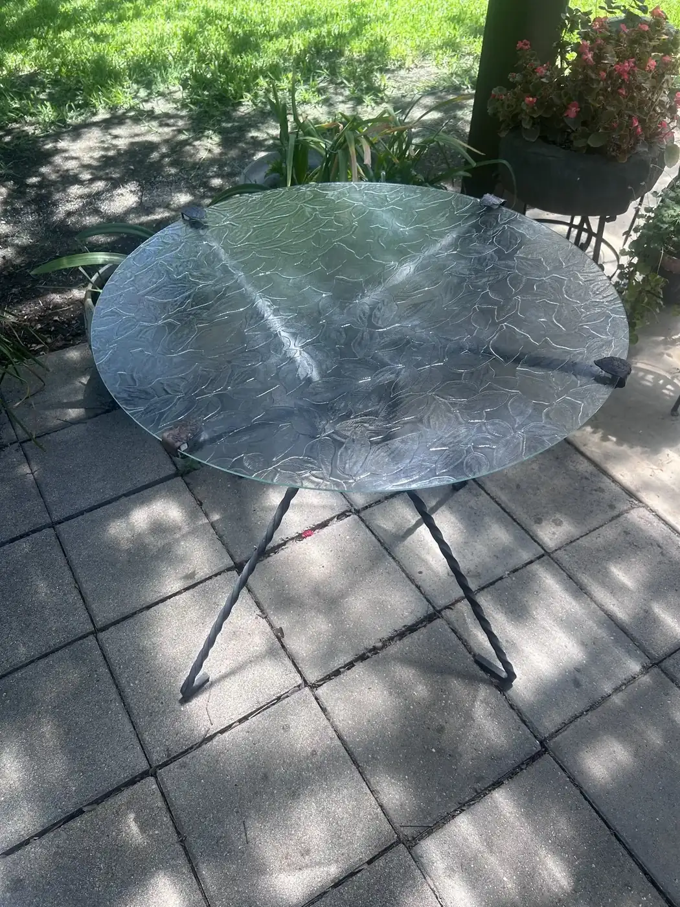

CUSTOM GLASS • BOERNE + SAN ANTONIO
Custom Glass Fabrication & Installation in Boerne & San Antonio, TX
The right custom glass solution should feel integrated—not added on. Start with the purpose of the opening, the materials around it, and the exact visual or functional need the finished piece must meet.
AT A GLANCE
What is custom glass?
Custom glass fabrication & installation for residential and commercial spaces in Boerne & San Antonio, TX. Founded 2004. Call (210) 370-3700.
This service page is organized to answer the practical questions a homeowner, business owner, property manager, or project team asks before making contact: when the service is relevant, how the process starts, what shapes cost, and what to expect next.
Tell us about your projectWHEN YOU MAY NEED THIS
Start here when…
- A standard product will not suit the dimensions or design of the space.
- You need a glass detail that works with a remodel, specialty opening, or commercial application.
- A mirror, partition, enclosure, or feature needs a made-for-the-space approach.
- You want help framing a glass idea before fabrication and installation decisions are made.
HOW IT WORKS
A clearer next step.
- 01
Share the essentials
Tell us the location, glass need, timing, and what you can see from photos or plans.
- 02
Align on the scope
The right conversation starts by separating the immediate issue from the finished result.
- 03
Move with intention
Use the estimate or emergency path that fits the property and the urgency of the situation.
COST
ESTIMATE CONTEXT
What influences the investment?
Custom glass pricing depends on the final dimensions, glass selection, edge and finish details, hardware or support requirements, fabrication complexity, installation access, and quantity.
For a useful conversation, share as much context as you have. A photo, rough measurement, address, and project timeline are often more valuable than trying to guess the solution first.
Request a tailored quoteFAQ
Service questions, answered directly.
These answers provide a fast starting point. For a project-specific recommendation, call or send the details of your opening.
See every questionWhat does custom glass mean?+
Custom glass is fabricated and selected around the needs of a specific opening, use case, dimension, or design detail rather than being treated as a standard off-the-shelf fit.
Can custom glass be used in homes and businesses?+
Yes. Custom glass suits both homes and businesses whenever the opening, design, or function needs a project-specific approach rather than a stock size. On the residential side that covers shower enclosures, mirrors cut to a wall or vanity, table tops, and odd-sized window panes. On the commercial side it covers storefront infill, partitions, and entry systems. Send photos, rough dimensions, and the intended use to 210-370-3700 to start.
What information helps with a custom glass request?+
Photos, approximate dimensions, the project location, the intended use, any material or design references, your timing, and a short description of the result you want all help. For custom glass the intended use matters as much as the measurements, because it drives glass thickness, edge finish, tempering, and hardware. Call 210-370-3700 or use the quote form and include whatever you have; the team will confirm exact dimensions on site.
RECENT WORK
Recent custom glass work.
MASTER GLASS SOLUTIONS
Let’s bring clarity to your custom glass project.
Request a quote for planned work, or call immediately if the situation is urgent.